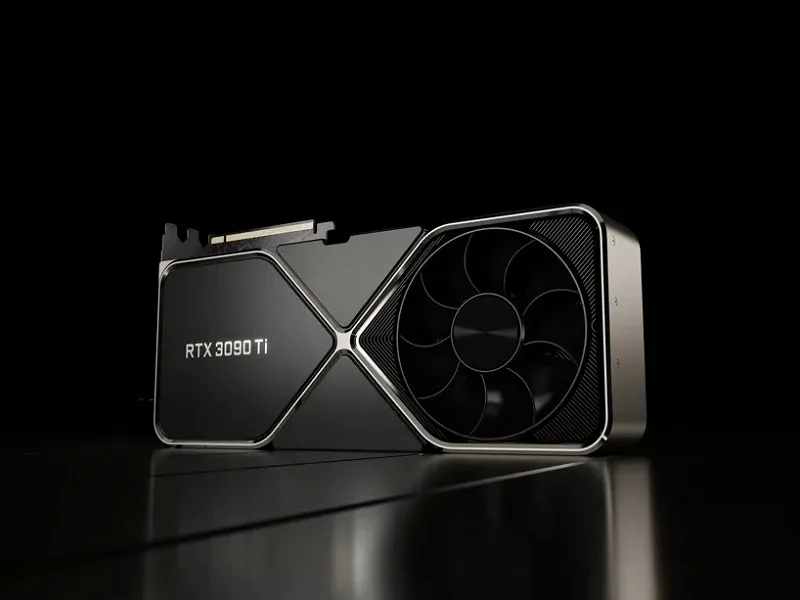

|  |
Видеокарты GeForce RTX™ 3090 Ti и 3090 созданы на базе Ampere — архитектуры NVIDIA RTX второго поколения. Они оснащены выделенными ядрами RT 2-го поколения, тензорными ядрами 3-го поколения, потоковыми мультипроцессорами и 24 ГБ видеопамяти G6X, чтобы обеспечить высокое качество и производительность для игр и творчества. NVIDIA DLSS (сглаживание с алгоритмами глубокого обучения) позволяет получить огромный прирост производительности. Технология ускоряет частоту кадров, а также обеспечивает новый уровень качества графики при помощи тензорных ядер в видеокартах GeForce RTX. Выкрутите настройки и разрешение на максимум и играйте с потрясающей реалистичностью. |
Технологии
NVIDIA Reflex обеспечивает уникальное конкурентное преимущество. Минимальный инпут-лаг для максимальной отзывчивости с видеокартами GeForce RTX 30, игровыми мониторами NVIDIA® G-SYNC® и технологией Reflex. Повысьте скорость реакции, прицеливайтесь точнее, попадайте в цель быстрее соперников благодаря набору передовых технологий для снижения задержки системы в соревновательных играх.